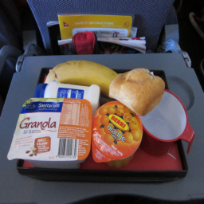
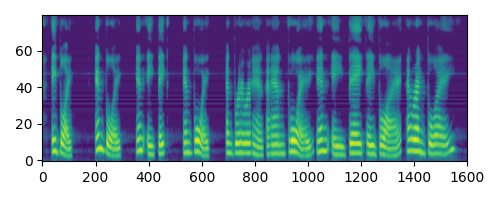
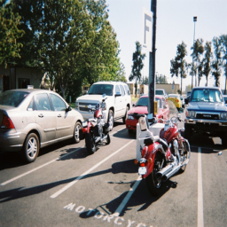
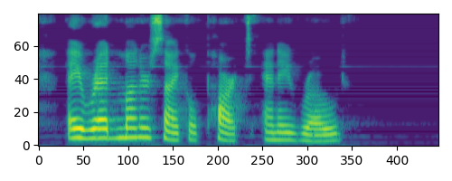
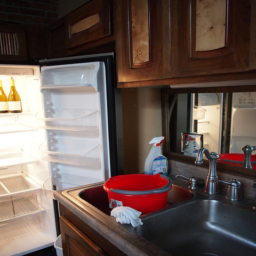
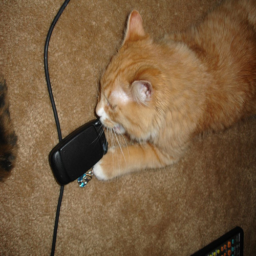
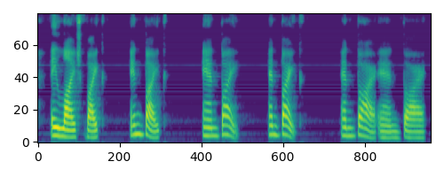
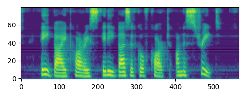

155
Text: a plane is in a past in a grass Raw:
263 32 208 5 336 100 803 362 256 560 320 432 96 651 538 133 911 847 89 936 48 336 5 336 100 717 746 494 181 913 1013 467 5 208 5 336 100 746 827 119 936 48 336 5 336 100 803 256 560 846 476 320 873 70 (...truncated 156 chars)
Text: a blue blue and blue cat and blue airplane Raw:
71 791 71 791 71 191 175 883 315 1011 859 927 935 623 799 839 765 69 873 866 380 220 136 289 246 309 1023 495 663 655 765 69 873 380 946 29 136 289 246 309 1023 495 663 655 765 69 873 380 946 29 136 2 (...truncated 424 chars)
Text: a man picking up a banana with a big red on top Raw:
181 218 181 210 122 81 77 132 54 249 71 251 25 89 113 221 25 103 113 202 122 136 33 71 112 103 71 249 112 249 71 133 134 71 81 33 132 71 33 210 133 113 175 206 82 71 186 249 71 33 33 101 155 228 227 3 (...truncated 27 chars)
Text: a plane flying in a blue air plane Raw:
263 32 32 32 208 208 208 5 336 100 100 803 256 803 320 432 432 651 538 133 715 911 911 847 89 936 48 48 5 5 5 5 5 5 461 192 863 863 304 133 552 552 552 807 715 911 911 89 89 852 100 100 852 329 852 79 (...truncated 192 chars)
1686
Text: a man on a snow covered slope with skis Raw:
263 32 208 5 336 100 803 256 337 728 971 728 536 113 580 827 100 869 254 1003 442 791 1013 299 581 245 7 522 135 320 873 72 892 663 554 816 846 289 299 304 538 157 129 689 522 476 27 476 5 336 815 144 (...truncated 71 chars)
Text: a man in the snow and vest in the snow and is in the snow in the snow and is in the snow in the snow in the snow and is in the snow in the snow Raw:
71 791 71 791 71 191 175 883 315 1011 239 859 927 935 623 799 839 995 846 792 121 965 22 904 864 643 253 625 683 268 233 311 779 119 1011 165 901 621 133 823 845 233 612 613 371 463 399 693 607 105 45 (...truncated 591 chars)
Text: a person passing down the snow on skis Raw:
181 179 225 181 252 181 225 230 241 70 82 225 45 125 212 134 196 135 209 96 206 172 225 181 225 91 253 107 238 186 134 173 152 252 179 70 49 172 246 225 249 121 242 38 167 101 167 184 16 152 16 152 17 (...truncated 149 chars)
Text: a man in a snow covered snow covered slope Raw:
263 32 32 32 32 208 208 208 208 5 5 336 717 717 803 337 728 971 728 536 536 536 536 827 827 936 936 48 336 5 336 336 100 852 329 329 803 362 825 740 913 880 299 299 299 581 581 129 689 522 522 135 135 (...truncated 308 chars)
3233

Text: a berries is a as a as a as a as is a as a at Raw:
263 32 208 5 336 100 803 362 256 560 846 476 5 336 100 803 362 256 560 846 476 5 336 374 502 427 250 543 910 775 256 181 913 1013 467 5 336 374 288 746 827 852 717 494 181 1013 467 5 336 100 746 827 9 (...truncated 352 chars)
Text: a bottle of fresh peas and bag is in bikes Raw:
71 791 71 791 71 191 175 883 315 165 901 133 619 557 381 623 799 839 399 69 873 866 873 556 803 735 907 210 188 182 785 823 279 461 945 743 167 975 655 723 139 366 550 505 26 524 768 650 104 446 13 84 (...truncated 540 chars)
Text: a car surfer on his stomach on a pole Raw:
181 232 181 232 220 252 170 252 220 225 181 166 48 82 225 119 210 189 10 79 167 170 16 209 79 155 166 246 189 10 155 155 189 22 10 19 155 166 104 184 206 61 129 170 61 148 10 79 167 104 189 53 166 225 (...truncated 81 chars)
Text: a peeled coffee kid sits in a park Raw:
336 336 336 336 336 476 476 476 476 5 476 461 461 983 427 427 909 909 909 909 909 803 803 803 320 873 821 765 351 313 129 129 522 522 135 769 476 320 873 986 96 651 538 174 595 595 770 770 226 775 160 (...truncated 520 chars)
4882
Text: a person in a plate of pizza Raw:
263 32 208 5 336 100 803 362 256 560 320 432 243 554 820 587 639 59 337 89 936 48 336 5 208 5 336 100 803 337 89 936 48 336 5 336 100 803 256 560 846 476 320 432 651 538 133 715 766 825 560 27 476 5 3 (...truncated 77 chars)
Text: a boy and boy in a big blue and blue and blue and blue and blue and blue and blue Raw:
71 791 71 791 71 191 175 883 315 165 901 133 619 557 381 623 799 839 813 918 876 522 380 203 489 485 230 808 222 750 864 713 646 381 53 639 901 165 315 883 175 191 71 191 175 883 315 165 901 621 133 4 (...truncated 590 chars)
Text: a person sitting with a table with lights Raw:
181 252 181 124 181 25 127 175 82 225 45 247 126 89 3 152 95 177 96 206 172 61 152 3 96 206 175 202 53 172 166 232 181 166 189 71 166 225 134 48 70 246 252 41 221 127 113 101 166 189 11 189 155 166 12 (...truncated 124 chars)
Text: a man at a table with a pizza in a restaurant holding on the table Raw:
263 32 32 32 32 32 32 32 32 32 32 32 32 32 32 208 208 5 5 336 100 100 803 337 89 728 728 42 536 536 536 827 580 936 100 869 254 254 442 329 803 256 256 417 272 272 272 362 766 766 362 284 284 614 341 (...truncated 462 chars)
6515
Text: a parking meter in a parking meter and a parking meter Raw:
263 32 208 5 336 717 803 256 560 320 432 72 507 535 685 765 398 89 329 728 962 1009 663 816 820 230 769 5 336 100 852 329 852 803 256 560 320 432 72 550 507 975 685 765 398 89 936 728 971 962 226 1009 (...truncated 184 chars)
Text: a blue fire hydrant with white and red and grass Raw:
71 791 71 791 71 191 175 883 315 1011 859 927 935 623 799 839 765 69 873 866 380 220 136 289 246 309 1023 495 663 655 403 781 389 1021 172 775 735 907 210 188 446 98 709 586 141 97 889 417 933 830 305 (...truncated 569 chars)
Text: a parking meter in a parking meter Raw:
232 252 220 232 220 232 220 232 220 232 220 232 181 225 232 25 102 113 175 25 166 45 137 238 191 63 218 198 105 202 206 53 172 70 105 175 248 212 126 145 82 220 179 223 232 220 232 181 232 220 232 220 (...truncated 24 chars)
Text: a large street with a black hat stands Raw:
263 263 263 336 501 501 993 151 157 81 142 550 550 1015 1015 16 293 293 202 202 202 240 985 76 62 775 775 560 27 27 476 5 336 815 144 144 791 717 374 176 176 538 538 133 0 0 535 535 873 873 873 480 56 (...truncated 143 chars)
8309

Text: a group of bikers in the rain with people Raw:
263 32 208 5 336 100 803 362 560 849 273 723 62 359 224 809 224 993 501 224 414 284 133 807 715 39 685 554 816 587 913 467 100 852 936 852 791 87 12 445 362 911 847 89 936 48 336 5 336 815 144 815 494 (...truncated 69 chars)
Text: a red motorcycle parked in a road Raw:
71 791 71 791 71 191 175 883 315 1011 239 307 619 557 381 623 899 247 809 112 272 424 631 98 253 162 206 734 943 813 371 995 759 949 449 615 977 729 215 912 1014 417 754 105 92 767 180 751 672 82 222 (...truncated 276 chars)
Text: a crew shaking air on a truck in the side of a car Raw:
181 232 218 232 181 218 174 218 232 181 124 253 33 124 25 40 212 248 221 135 152 135 201 113 70 221 113 116 231 206 109 40 221 113 116 212 180 125 186 71 231 231 71 246 173 229 247 227 121 227 124 218 (...truncated 117 chars)
Text: a row of parked on the back of a stop Raw:
263 32 32 32 32 208 263 263 5 5 336 501 501 501 791 87 12 12 445 129 7 522 135 769 769 769 769 5 476 320 432 432 790 1015 507 507 27 27 27 846 476 5 5 336 224 224 790 254 1003 442 852 791 224 249 249 (...truncated 122 chars)
11809
Text: a person in a field playing frisbee in a field Raw:
263 32 208 5 336 100 803 362 256 560 320 432 243 554 820 587 639 59 746 827 119 936 48 336 5 336 100 852 329 852 803 256 560 476 461 192 863 192 351 313 7 522 135 846 476 320 432 651 538 133 911 847 8 (...truncated 149 chars)
Text: a baseball players and den and a baseball player Raw:
71 791 71 791 71 191 175 883 695 239 859 927 935 623 799 839 813 918 876 958 734 817 793 35 557 381 66 76 767 455 811 95 403 185 810 556 858 803 735 803 318 617 583 895 691 925 478 850 385 176 214 657 (...truncated 579 chars)
Text: a vase full of plants and three heads Raw:
252 181 225 218 179 181 232 218 225 181 133 60 188 166 246 188 60 85 222 211 16 169 223 181 225 83 128 53 166 232 181 252 152 252 181 148 237 203 64 60 85 105 24 105 202 150 85 150 145 246 152 252 225 (...truncated 126 chars)
Text: a man in a pink holds and bat in a bar Raw:
263 32 32 32 32 32 32 32 32 32 208 208 208 5 5 336 717 803 803 803 42 971 728 337 536 827 580 936 48 100 100 852 329 852 501 320 432 320 362 911 911 847 936 320 432 432 790 44 341 341 341 135 181 1013 (...truncated 540 chars)
13471
Text: a park bench on the beach on a beach Raw:
263 32 208 5 336 100 803 362 256 560 320 432 975 507 975 27 476 249 502 536 113 580 66 293 202 467 5 208 5 336 501 254 1003 442 852 791 582 249 427 536 113 580 66 293 202 467 5 208 5 336 501 254 1003 (...truncated 59 chars)
Text: a wooden bench and bench and a bench Raw:
71 791 71 791 71 191 175 883 695 347 887 583 975 663 863 806 74 83 728 341 910 1004 675 675 229 845 745 15 612 43 379 571 69 873 876 958 996 329 643 253 625 785 510 964 47 641 852 46 951 573 867 819 6 (...truncated 339 chars)
Text: a woman sitting on a bench being with a wagon on an airport Raw:
181 252 181 232 181 232 124 225 124 181 25 102 241 101 172 53 110 128 64 156 60 18 60 49 172 61 152 129 3 201 103 102 49 53 148 149 100 30 66 158 102 70 166 181 82 102 18 60 49 88 141 50 225 181 246 1 (...truncated 176 chars)
Text: a bench sits on a bench with wooden tile Raw:
336 336 336 336 336 476 476 461 461 461 374 288 502 249 249 427 536 536 113 113 293 293 202 202 467 467 467 467 360 606 606 59 80 80 654 289 1013 467 869 869 254 277 1003 442 791 791 249 249 502 536 5 (...truncated 322 chars)
15061
Text: a surfer in the waves in the water Raw:
263 32 208 5 336 717 803 256 740 360 606 360 250 543 975 809 243 554 816 820 230 100 852 329 852 791 151 120 144 362 256 803 494 181 1013 467 5 336 100 717 852 936 852 791 993 151 81 831 142 552 663 8 (...truncated 19 chars)
Text: a surfer to ride the wave on a surf board Raw:
71 791 71 791 71 191 175 883 315 1011 859 927 935 623 799 490 455 934 282 934 75 970 709 790 692 97 933 201 1021 201 933 417 435 955 235 163 471 502 807 659 6 47 11 331 87 519 316 636 424 884 292 188 (...truncated 313 chars)
Text: a small area of a very city on Raw:
246 166 232 181 232 181 232 181 218 181 232 181 232 252 181 232 181 232 181 232 181 232 181 232 246 181 232 181 225 166 232 218 220 225 181 232 181 232 225 181 232 181 225 179 225 232 181 232 220 232 (...truncated 292 chars)
Text: a surfer is riding on a wave Raw:
263 32 32 32 32 32 32 32 32 32 32 32 32 32 32 32 32 208 208 5 5 5 374 374 803 256 256 181 360 606 606 794 525 525 770 863 243 554 543 230 100 100 803 803 494 909 909 87 12 556 552 807 242 1009 1009 39 (...truncated 190 chars)
16622
Text: a street sign and a ap sign and a ap background Raw:
263 32 208 5 336 100 803 256 740 913 880 240 985 76 62 962 560 27 289 360 606 360 794 552 242 911 89 936 48 336 5 336 100 746 827 936 48 336 100 803 256 560 846 476 5 336 100 803 256 560 846 476 5 336 (...truncated 212 chars)
Text: a stop sign in and in a striant in the night Raw:
71 791 71 791 71 191 175 883 315 1011 859 927 935 623 66 76 767 92 666 862 442 710 752 856 763 1019 198 178 262 773 633 245 19 973 588 666 180 942 231 301 188 808 169 793 22 981 205 183 311 779 119 10 (...truncated 536 chars)
Text: bright green wooden birds on a surf board Raw:
181 225 179 223 181 246 172 44 246 232 181 232 44 232 246 181 246 44 166 22 189 79 17 175 197 82 246 44 166 22 190 17 150 145 206 44 172 53 22 189 231 35 246 44 246 232 225 22 11 21 79 184 166 225 179 (...truncated 221 chars)
Text: a red and black and white photograph of a beach Raw:
263 263 32 32 32 32 32 32 32 208 208 208 208 5 336 100 717 803 803 803 815 87 12 12 445 564 80 80 80 654 654 846 846 336 5 208 208 5 5 336 374 288 746 827 827 852 852 936 48 176 176 284 538 133 0 0 0 (...truncated 360 chars)
18302
Text: a person in a black and white stands in the air Raw:
263 32 208 5 336 100 803 256 560 320 432 243 554 820 587 639 59 337 89 936 48 336 100 852 936 852 791 501 224 176 284 538 133 0 535 27 476 5 336 100 746 827 936 48 81 749 133 715 825 560 27 289 1013 8 (...truncated 109 chars)
Text: a woman in white shirt is in his hands through a blue and white and isance Raw:
71 791 71 791 71 191 175 883 315 1011 859 927 935 623 799 839 863 491 698 341 39 485 617 330 1013 498 965 708 823 845 183 311 43 379 511 695 48 175 191 71 191 175 883 315 1011 239 859 307 823 107 311 (...truncated 583 chars)
Text: a tennis player skateboards on a tennis court Raw:
252 232 220 232 181 232 225 181 225 113 70 25 25 89 29 60 36 145 249 3 135 169 252 26 148 64 67 17 175 17 212 180 212 133 232 181 232 181 252 16 169 252 41 241 102 105 165 35 246 232 181 166 57 108 12 (...truncated 124 chars)
Text: tennis player in a toeet his serve in hand Raw:
263 32 32 32 32 32 32 32 32 32 32 32 32 208 208 208 263 336 717 717 717 717 336 263 263 208 208 208 208 208 208 5 5 5 417 272 272 417 110 1003 1003 494 913 913 320 986 96 651 538 715 141 250 250 820 8 (...truncated 463 chars)
19877
Text: a harbor with people in a river in a river Raw:
263 32 208 5 336 100 803 362 256 560 320 432 72 550 1015 525 582 190 554 816 820 230 769 5 336 815 144 815 494 181 467 476 320 873 765 924 765 284 614 156 341 135 769 5 208 5 336 100 746 827 936 48 33 (...truncated 166 chars)
Text: a body of water on the water in many a body of water on the water Raw:
71 791 71 791 71 191 175 883 315 1011 239 859 927 935 623 799 839 399 69 873 866 380 556 803 735 907 210 188 182 27 323 337 334 956 68 306 667 373 879 190 919 627 220 740 341 888 843 214 913 497 301 2 (...truncated 410 chars)
Text: a skateboarded up in a white wall Raw:
181 232 181 252 181 246 145 217 175 134 25 225 166 93 110 195 1 23 109 166 41 74 223 225 137 52 38 21 155 166 124 225 181 232 181 225 149 21 159 155 124 225 232 181 232 82 175 96 206 53 166 246 93 57 (...truncated 195 chars)
Text: people laying down in water in a city Raw:
263 32 32 32 32 32 32 32 32 32 208 208 208 5 5 5 320 432 873 924 924 765 284 614 156 993 151 157 157 362 911 847 119 936 706 706 489 860 860 860 58 103 936 100 100 746 827 827 48 815 81 831 142 142 52 (...truncated 172 chars)
21549

Text: a kitchen with pans in a a a 8 Raw:
263 32 208 5 336 717 803 256 560 821 112 916 66 119 936 48 336 5 336 815 144 815 717 467 476 320 873 70 141 536 113 580 66 1013 880 1013 467 5 208 5 336 100 803 827 119 936 48 336 5 336 100 803 256 56 (...truncated 138 chars)
Text: a kitchen with a bowl in an unfinished wall is in an arm and a skateboard in a kitchen Raw:
71 791 71 791 71 191 175 883 315 1011 859 927 935 53 639 547 844 966 680 492 762 414 414 762 332 195 661 319 575 911 335 687 995 759 806 647 507 902 125 685 599 73 61 765 69 873 866 380 556 196 64 36 (...truncated 586 chars)
Text: a sidewalk of planes half suite women vacation Raw:
181 232 220 244 220 244 220 25 102 127 3 135 170 148 242 62 155 155 64 62 38 155 124 61 252 220 232 225 124 181 225 243 33 210 124 225 110 57 62 201 113 202 148 152 252 220 232 124 232 181 124 149 136 (...truncated 200 chars)
Text: a white kitchen with cheeses and a blue kitchen Raw:
263 263 263 263 263 336 336 336 336 336 5 5 336 336 717 717 852 48 336 336 336 336 336 717 803 256 803 81 749 749 133 715 825 560 476 417 821 821 112 427 112 916 916 916 66 119 119 936 48 336 5 5 5 5 (...truncated 254 chars)
23024
Text: a dog in a a a ab at the a a bench Raw:
263 32 208 5 336 100 803 362 256 502 706 489 277 174 277 352 654 846 476 5 336 100 803 746 827 936 48 336 5 336 100 803 256 560 846 476 5 336 100 803 256 560 846 476 5 336 100 803 256 560 846 476 5 33 (...truncated 109 chars)
Text: a dog laying on the pot of a white and is sitting on it and sitting at a wide one of a dog laying on the cot Raw:
71 791 71 791 71 191 175 883 315 1011 859 927 935 623 799 839 462 476 606 476 737 670 988 428 735 231 615 879 190 697 462 157 813 371 995 759 221 679 373 622 713 354 436 208 433 959 186 3 183 311 779 (...truncated 586 chars)
Text: a dog up holding a wooden baseball holding it Raw:
220 232 220 179 232 220 232 181 166 93 57 21 212 206 166 89 107 195 55 214 124 214 110 216 110 166 246 53 110 93 110 53 172 44 172 57 185 145 206 246 232 109 184 126 184 206 82 223 179 44 172 110 11 1 (...truncated 116 chars)
Text: a dog in a field holding a frisbee Raw:
263 263 208 263 336 100 288 502 706 706 489 327 174 174 174 277 654 846 846 476 476 336 717 852 852 852 717 461 192 192 684 351 351 313 129 7 522 135 467 476 5 5 5 5 5 476 320 320 790 341 993 778 1009 (...truncated 109 chars)
24752
Text: a bus is stopped in a road Raw:
263 32 208 5 336 100 803 256 560 846 176 414 284 790 174 451 297 913 1013 467 5 336 717 803 494 181 1013 880 216 637 489 892 595 872 476 5 336 100 852 329 852 803 256 803 815 87 12 556 522 454 654 846 (...truncated 11 chars)
Text: a bus is parked in the bus is parked in the bus Raw:
71 791 71 791 71 191 175 883 315 1011 239 927 935 381 623 799 399 69 873 866 380 556 775 301 188 182 842 821 92 934 666 862 957 95 7 605 51 883 175 191 71 791 71 191 175 883 315 165 901 587 927 733 72 (...truncated 230 chars)
Text: a few sidewalk sitting in a city Raw:
181 223 181 232 124 181 232 124 220 232 181 252 223 181 232 181 232 181 232 181 232 181 246 181 232 181 218 232 181 232 181 179 218 179 124 232 181 232 181 225 232 181 246 181 218 232 225 232 181 218 (...truncated 261 chars)
Text: a bus is stopped in front of a grass Raw:
263 32 32 32 32 208 208 208 5 263 336 374 288 803 803 717 336 336 5 5 336 100 717 803 256 803 176 414 284 790 174 174 451 913 913 1013 1013 1013 467 5 5 5 5 5 336 717 803 803 494 181 913 181 467 5 208 (...truncated 337 chars)
26030
Text: a pair of cows in a field Raw:
263 32 208 5 336 717 803 256 803 320 432 873 70 141 250 543 820 230 769 476 320 873 70 480 860 689 522 135 913 1013 467 5 336 100 852 936 852 791 461 192 684 351 313 129 7 522 135 769 5 208 32
Text: a couple of cows in their in a wall of cattle Raw:
71 791 71 791 71 191 175 883 315 1011 859 927 935 381 667 1005 567 551 771 294 310 124 526 388 198 178 262 773 985 810 18 203 36 824 626 721 975 61 347 601 375 441 517 231 615 190 599 813 691 925 1017 (...truncated 565 chars)
Text: two cows with stands in it steep hills in the pen Raw:
181 223 232 252 181 124 181 218 181 252 147 89 239 255 236 148 89 91 78 90 90 38 236 16 152 169 225 127 87 88 252 16 252 170 230 208 102 132 92 82 252 129 152 225 102 103 35 172 44 88 70 127 87 239 10 (...truncated 248 chars)
Text: there is a cow cows in a field Raw:
263 32 32 32 32 32 208 208 5 5 336 374 374 230 820 230 230 909 909 494 501 320 432 873 70 480 564 564 564 110 129 522 135 769 769 769 769 769 769 769 5 476 320 873 821 821 417 110 860 860 689 689 522 (...truncated 176 chars)
26166
Text: a person in a blue shirt and a white and white stands Raw:
263 32 208 5 336 100 803 362 256 560 320 432 243 554 820 587 639 59 337 89 936 48 336 5 336 100 803 337 89 936 48 336 5 336 100 803 256 560 846 476 5 336 224 176 284 505 584 454 181 202 223 64 223 968 (...truncated 310 chars)
Text: a man in white frisbee inside of a net Raw:
71 791 71 791 71 191 175 883 695 347 887 747 971 963 741 121 431 121 965 22 864 643 253 625 683 268 233 311 779 239 355 621 133 823 845 183 311 779 663 863 491 83 728 888 843 913 672 82 750 713 646 20 (...truncated 326 chars)
Text: a man with red chain and a home for a frisbee Raw:
232 181 124 228 34 101 167 249 130 249 122 38 104 57 34 188 61 148 124 225 232 181 232 22 94 212 36 36 251 109 225 41 47 175 113 175 202 172 82 232 225 221 222 85 35 172 44 232 181 225 149 110 55 216 (...truncated 102 chars)
Text: a man is sitting on a desk of a red cake Raw:
263 32 32 32 208 208 263 263 336 336 717 336 336 336 336 336 717 48 48 336 336 336 336 336 336 336 336 336 336 336 336 717 717 803 803 803 803 48 48 48 42 728 971 42 141 141 536 536 113 113 103 42 815 (...truncated 569 chars)
27582

Text: a cat with cat and a white sheet Raw:
263 32 208 5 336 100 803 362 560 426 821 272 564 953 0 535 27 476 5 336 815 144 815 494 181 467 476 320 873 70 480 564 0 535 27 476 5 336 100 717 746 827 936 48 336 100 803 256 803 815 81 749 133 715 (...truncated 76 chars)
Text: a adut sitting on top of the bed a cat and card a ads and is a hat Raw:
71 791 71 791 71 191 175 883 315 1011 859 927 935 53 639 547 844 248 966 753 346 206 162 253 269 596 474 638 369 805 967 605 19 973 588 666 180 970 817 996 675 565 177 739 445 3 183 779 61 747 517 231 (...truncated 582 chars)
Text: a child standing with a chocolate and some broccoli Raw:
181 232 246 232 181 232 181 232 181 232 246 232 181 232 220 232 218 232 181 232 181 232 218 232 220 232 225 181 124 181 124 225 232 220 232 220 232 181 166 172 44 232 225 181 124 149 124 166 22 108 17 (...truncated 238 chars)
Text: a cat sitting on top of a computer white car Raw:
263 32 32 32 32 32 32 32 32 32 32 32 32 32 32 32 32 32 32 32 32 32 32 32 32 32 32 32 32 32 32 32 32 32 32 32 32 32 32 32 32 32 208 208 208 263 336 717 717 803 803 846 821 821 821 417 141 564 953 953 3 (...truncated 384 chars)
29172
Text: a person is surfing in the water Raw:
263 32 208 5 336 100 803 362 256 560 320 432 243 554 820 587 639 59 746 827 119 936 48 336 5 336 100 717 803 494 181 1013 360 606 360 250 543 975 770 461 160 847 89 48 336 100 852 329 852 993 81 831 1 (...truncated 39 chars)
Text: a big and big white and white in into a wave Raw:
71 791 71 791 71 191 175 883 315 1011 859 927 935 623 799 839 69 873 866 876 38 817 864 158 354 436 393 828 567 85 805 691 69 873 866 873 38 817 35 713 646 208 667 1005 143 639 901 165 315 883 175 191 (...truncated 566 chars)
Text: a bird gardening with a park car cars and rocks Raw:
181 166 150 17 166 232 155 247 180 247 180 190 109 181 155 1 190 109 124 225 124 149 21 247 180 23 251 17 150 53 172 166 181 124 149 214 57 21 204 251 42 17 150 145 251 232 225 110 21 194 65 155 124 2 (...truncated 101 chars)
Text: a man is skiing in a wave on a wave Raw:
263 263 32 32 32 32 32 32 32 32 32 32 32 32 32 32 32 32 32 32 32 32 32 208 208 208 263 336 717 717 852 42 728 728 746 564 564 827 827 852 852 717 494 181 1013 1013 880 880 457 457 765 351 775 775 256 (...truncated 363 chars)
30773
Text: a bike parked on the sidewalk with passengers Raw:
263 32 208 5 336 100 803 362 256 560 176 414 284 133 807 715 39 27 476 320 432 72 550 507 975 27 476 336 501 254 1003 442 42 791 59 360 606 360 552 807 715 362 560 846 815 81 831 142 327 595 30 535 27 (...truncated 131 chars)
Text: a large bike and bike and bike a bike and water Raw:
71 791 71 791 71 191 175 883 315 1011 239 133 619 557 381 623 899 699 221 136 238 485 735 907 210 188 446 98 1008 788 475 661 641 951 573 867 765 69 873 380 18 858 497 210 540 222 864 354 436 393 202 (...truncated 542 chars)
Text: a bike on a city bicycles parked on the street Raw:
152 181 124 181 225 230 208 70 82 246 225 238 121 78 249 113 221 225 119 124 149 21 107 185 42 154 197 211 129 152 129 252 221 230 82 230 70 165 246 225 238 132 87 3 16 209 87 179 225 203 157 214 148 (...truncated 145 chars)
Text: a woman is riding a bike past an empty bus Raw:
263 263 208 208 5 336 501 501 993 81 831 156 719 719 442 852 494 909 909 12 12 445 242 911 847 89 176 414 133 807 715 825 560 27 27 476 5 5 5 476 320 320 480 564 451 451 297 913 494 852 852 852 852 10 (...truncated 94 chars)